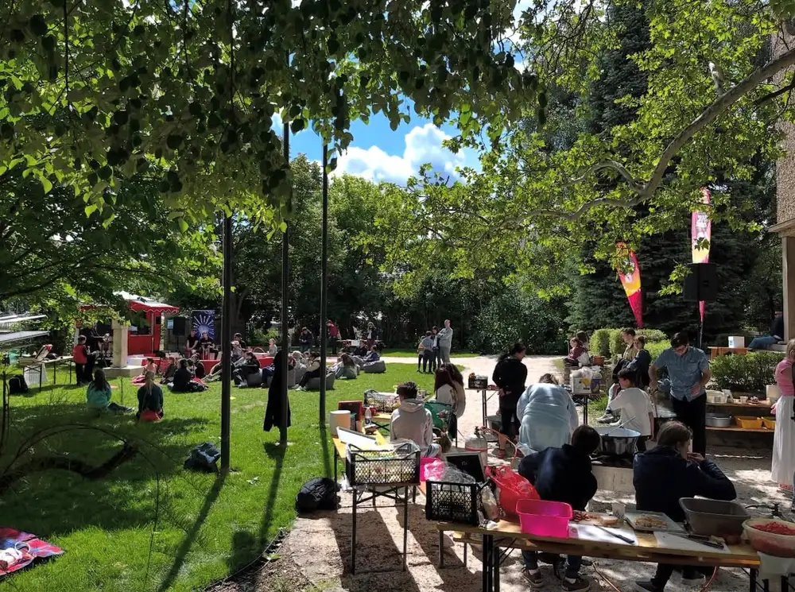
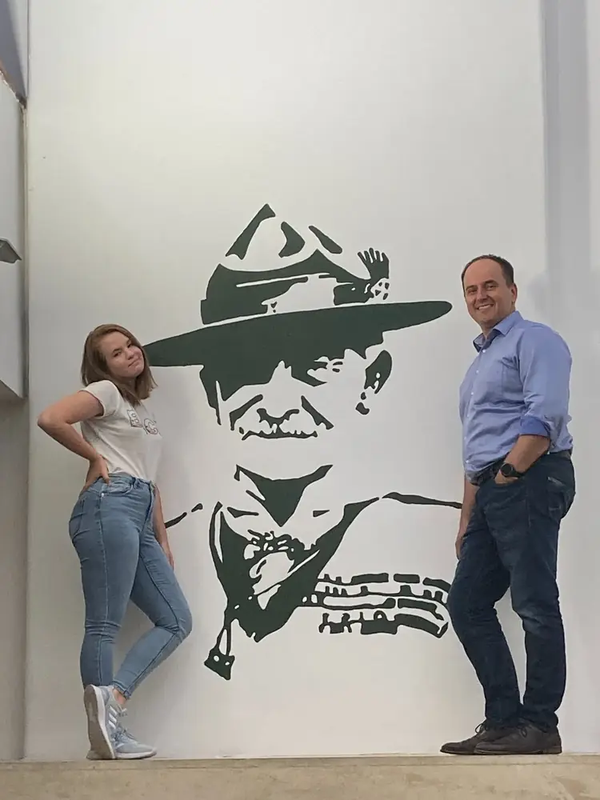
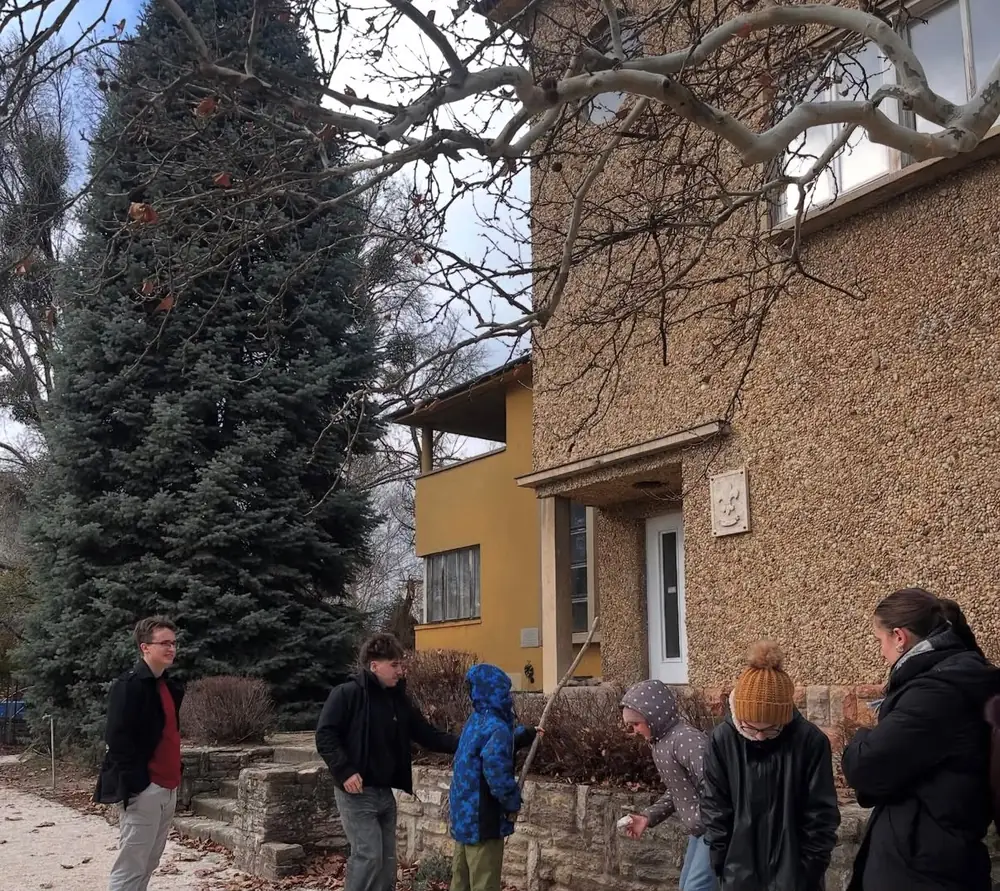
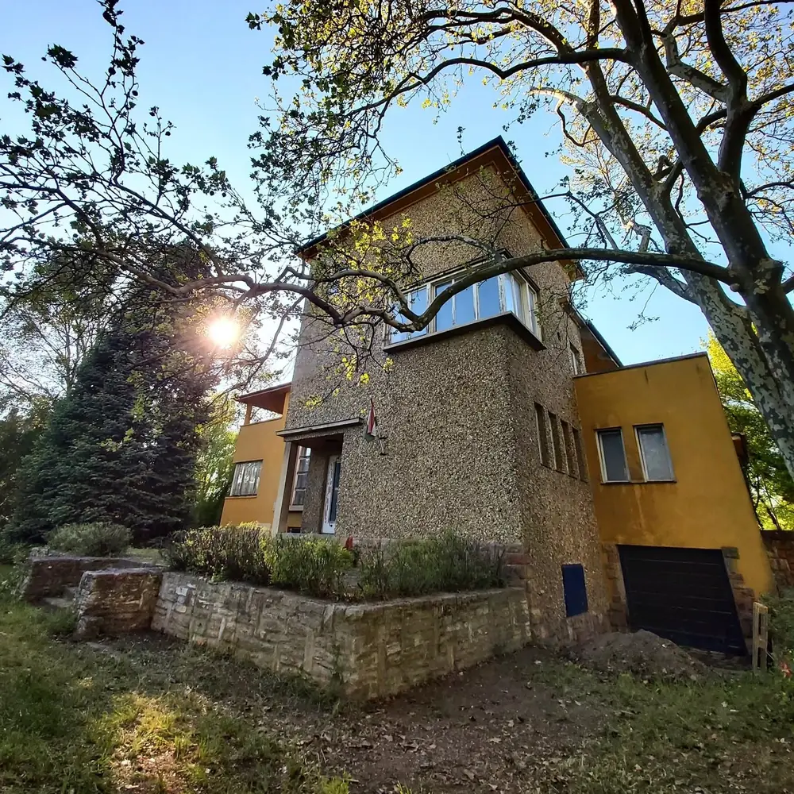
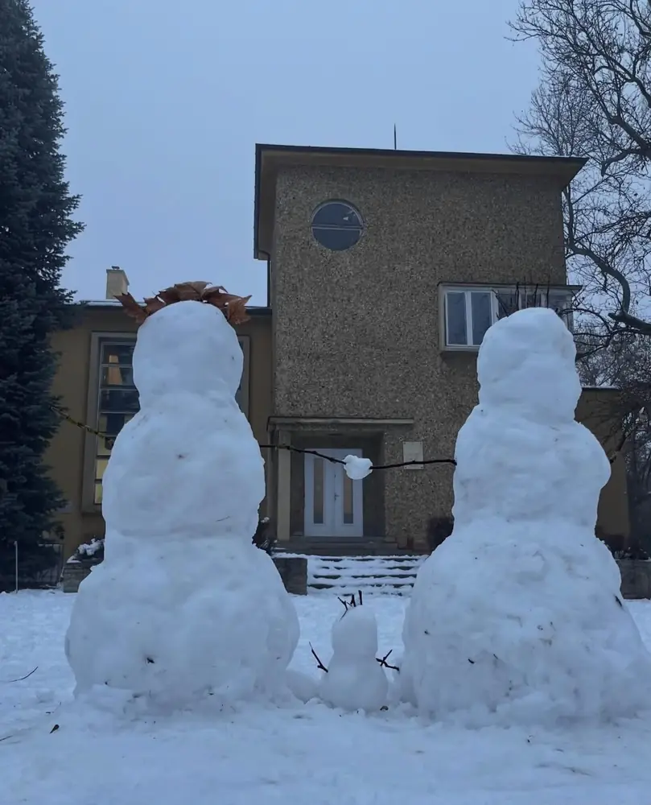
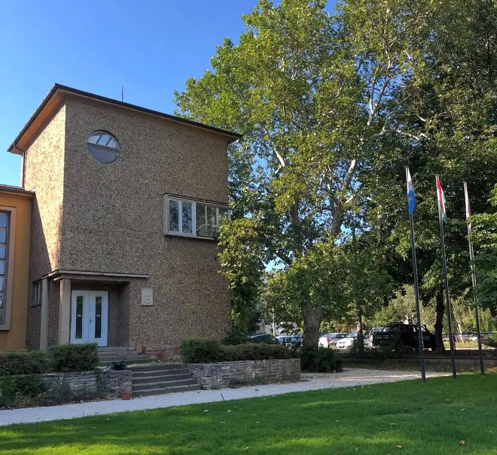

A Bezsilla villa az 1930-as évek elején épült a Rákos-patak partján, Rákos Pál építész tervei szerint. A modernista, Bauhaus-stílusú ház névadója és egykori tulajdonosa dr. Bezsilla István, Pest vármegye tiszteletbeli ügyésze volt. Az épület különlegessége, hogy van egy tükörkép-ikertestvére Budapesten, a XI. kerületben.
A második világháború alatt és után a villa lakatlan volt, és pusztult. 1951-től a rendőrség költözött be, később az Agrártudományi Egyetem tanárképző intézete kapta meg. A ház története a magyar történelemhez is kötődik: 1956. október 25-én a rendőrség épülete előtt tüntető tömegre lőttek, és a 17 éves Balázsovich András életét vesztette.
Az '56-os áldozatok emlékére 1989-ben fenyőfát ültettek a kertben, 1996-ban emléktáblát, 2001-ben pedig kopjafát állítottak. Az emlékmű ma is áll a villa kertjében, és a városi '56-os megemlékezéseket évek óta itt tartják.
Forrás: Bezsilla villa – Gödöllői Városi Könyvtár és Információs Központ
Csapatunknak újraalakulása után először a Szentháromság-templom közösségi termei adtak otthont, ezeket azonban hamar kinőttük, így később a Testvérvárosok útján lévő „Kis Muki”-ba költöztünk. A folyamatos létszámnövekedés miatt innen is tovább kellett költöznünk: 2021-ben használatba, 2024-ben pedig tulajdonba kaptuk a Bezsilla villát.
Az épület azonban nagyon megviselt állapotban várt ránk. Évekig üresen állt, felújítás nélkül: több helyen beázott, a parketta felpúposodott és megpenészedett, az egyik szobát pedig alá kellett dúcolni, mert a tetőszerkezet életveszélyessé vált.
Az adományoknak, az önkormányzat és az állam támogatásának, valamint a cserkészek önkéntes munkájának köszönhetően a Bezsilla ma már használható állapotban van, és újra élet költözött a falai közé.
Sajnos újabb nehézséggel kell szembenéznünk: a ház régi alapja süllyedni kezdett a közeli patak felé. Ezt minél hamarabb meg kell állítanunk, ezért most erre gyűjtünk. A részletekről a Gödöllői cserkészház Facebook-oldalán olvashatsz bővebben.
Szívesen látjuk a Bezsilla villában más cserkészcsapatok portyáit és programjait is. Ha jönnétek, keressétek a csapatotthonért felelős csapatparancsnok-helyettesünket e-mailben vagy telefonon.
A megkeresésekre igyekszünk 5 napon belül válaszolni. Kérünk minden érdeklődőt, hogy a szándékát legalább 2 héttel előre jelezze.
Érkezés előtt olvassátok el a vendégeknek szóló útmutatónkat:
Csapatotthon kisokos (PDF)
Csapatotthon
grebel.hanna@Csapatotthon
Grébel Hanna vagyok, törzsgyökeres gödöllői és jelenleg az ELTE társadalomtudományi karán vagyok szociológi alapszakos hallgató. 2015-óta része az életemnek a cserkészet. 2022-ben őrsvezető lettem és jelenleg is aktívan vezetem a Gyömbér őrsöt. 2024-ben felkértek, hogy legyek a Bezsilla villáért felelős Csapatparancsnok-helyettes, amit szívesen vállaltam. Elvégeztem a segédtiszti vezetőképzőt és 2025 őszében leváltottam az elődömet. Feladatom, hogy a csapatotthonunk vidám, biztonságos és funkcionális környezetet biztosítson a gyermekek és a vezetők számára egyaránt, felveszem a kapcsolatot azokkal, akik szállás miatt keresnek meg minket (más cserkészcsapatok) és gondoskodok a ház felszereltségéről.
Cím: 2100 Gödöllő, Cserkész köz 1.





